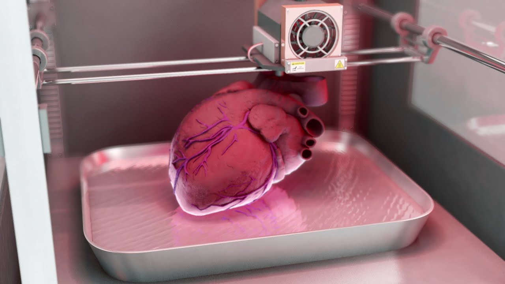

| Técnica para su fabricación |
• La compañía Carmat ha desarrollado un corazón artificial completo que permite sustituir el músculo dañado de un paciente y mantenerle con vida hasta que se localiza a un donante y se lleva a cabo el trasplante. La empresa pretende dar respuesta a los problemas de insuficiencia cardiaca de la población, una dolencia progresiva que cuenta con una tasa de supervivencia de apenas el 50% cinco años después del inicio del tratamiento. Hasta el momento, el trasplante de corazón era el único tratamiento posible para prolongar la esperanza de vida de estos pacientes, pero esta terapia está limitada por la escasez de donantes, que limita el número de trasplantes a alrededor de 300 al año.
|
|  |